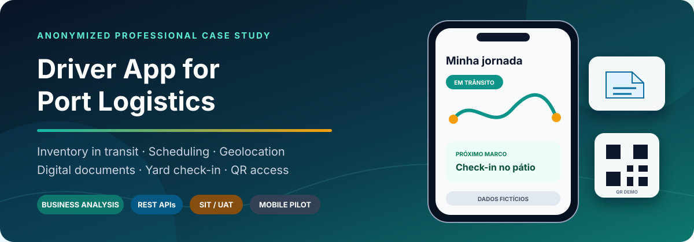
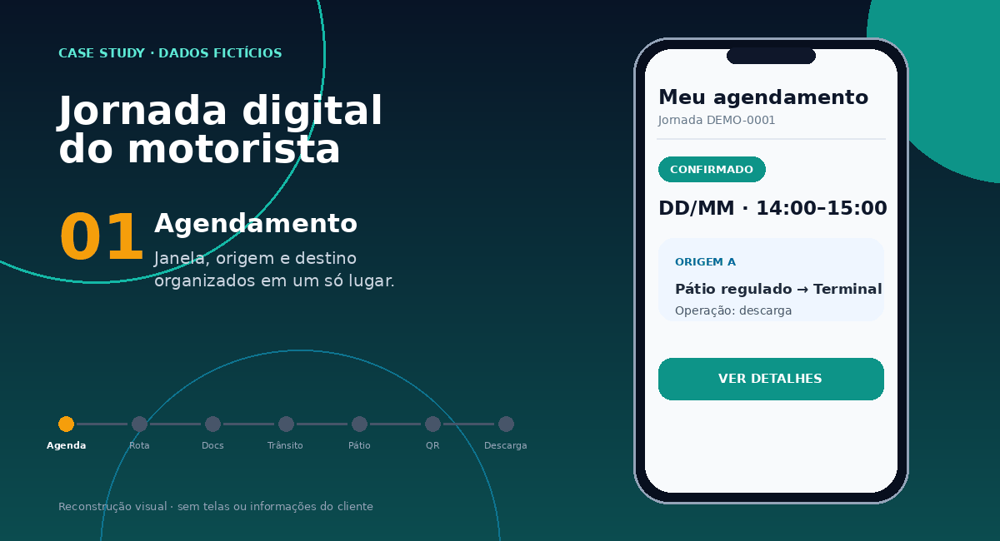

Visibilidade fragmentada
Agendamento, transporte, pátio e terminal produziam marcos distintos da mesma jornada.
Case profissional anonimizado
Business Analysis aplicada a uma jornada mobile de logística portuária: agendamento, documentos digitais, geolocalização, pátio regulado, QR Code, integrações REST e qualidade de ponta a ponta.

01 · Desafio de negócio
O estoque físico mostrava apenas parte da operação. Para planejar embarques, o terminal também precisava entender quais cargas estavam programadas, em deslocamento ou aguardando liberação — sem depender de ligações e controles paralelos.
Agendamento, transporte, pátio e terminal produziam marcos distintos da mesma jornada.
A chegada do veículo precisava acompanhar a capacidade do terminal, a fila externa e a chamada.
Orientações, documentos, status e autorização de acesso deveriam existir em um fluxo simples e rastreável.
Pergunta central: como transformar eventos físicos da jornada rodoviária-portuária em informação confiável para o planejamento, oferecendo ao motorista clareza sobre o próximo passo?
02 · Jornada digital
A experiência conecta preparação, deslocamento, espera, autorização e operação. Cada etapa orienta o usuário e produz uma evidência útil para o ecossistema logístico.
Janela operacional e compromisso de chegada.
Orientações, arquivos digitais, origem e destino.
Eventos e localização com finalidade definida.
Direcionamento ao ponto de espera correspondente.
Confirmação de chegada e atualização do marco.
Liberação sincronizada com a capacidade do terminal.
Credencial temporária habilitada no estado correto.
Início da operação e transição ao recebimento físico.

03 · Solução e integrações
A arquitetura pública é intencionalmente conceitual. Ela demonstra responsabilidades, origem da informação e fluxo lógico sem revelar topologia, endpoints, payloads, credenciais ou nomes internos.
Carga efetivamente recebida e confirmada pelo sistema do terminal.
Carga ativa, associada a agendamento e eventos logísticos válidos.
Atrasos, cancelamentos, divergências ou perda de atualização que exigem análise.
04 · Minha atuação
Atuação funcional de ponta a ponta, conectando operação, tecnologia, fornecedor e usuários para transformar uma necessidade logística em requisitos testáveis e uma jornada implantável.
Limite de autoria: este case demonstra análise, especificação, validação e condução funcional. Não reivindica autoria sobre o código-fonte, a interface ou a plataforma de terceiros.
05 · Estratégia de qualidade
O fluxo só era considerado aprovado quando um evento produzido em uma ponta resultava no estado correto na outra — inclusive em situações de duplicidade, perda de conexão, mudança de ordem ou indisponibilidade.
Necessidade, regra, cenário, evidência e resultado.
Fluxos positivos, negativos, mensagens e obrigatoriedade.
Eventos, respostas, idempotência e reprocessamento.
Permissões, navegação, documentos e conectividade.
Comunicação entre app, plataforma, pátio e terminal.
Aderência à rotina e linguagem compreensível ao usuário.
Uso em aparelho real e confronto esperado versus observado.
Incidentes, correções, retestes e estabilização.
Foco técnico
Não bastava exibir uma imagem: era necessário validar elegibilidade, chamada do terminal, associação à jornada, leitura, expiração, revogação, duplicidade e retorno do status entre os sistemas.
06 · Digitalização responsável
Agendamento, orientações, documentos e credencial de acesso passaram a compor uma jornada digital, reduzindo dependência de impressos e contatos paralelos sem enfraquecer governança e controles.
Distinção: “paperless port” descreve digitalização e redução de papel nesta jornada. O case não afirma integração formal com o sistema governamental Porto Sem Papel.
07 · Evidências públicas
Os artefatos foram reconstruídos e sanitizados para evidenciar competências sem publicar dados, telas, contratos, endpoints ou documentos internos.
Conclusão
Este case mostra como traduzi um fluxo portuário complexo em requisitos, regras, eventos e critérios de qualidade capazes de sustentar uma implantação real.